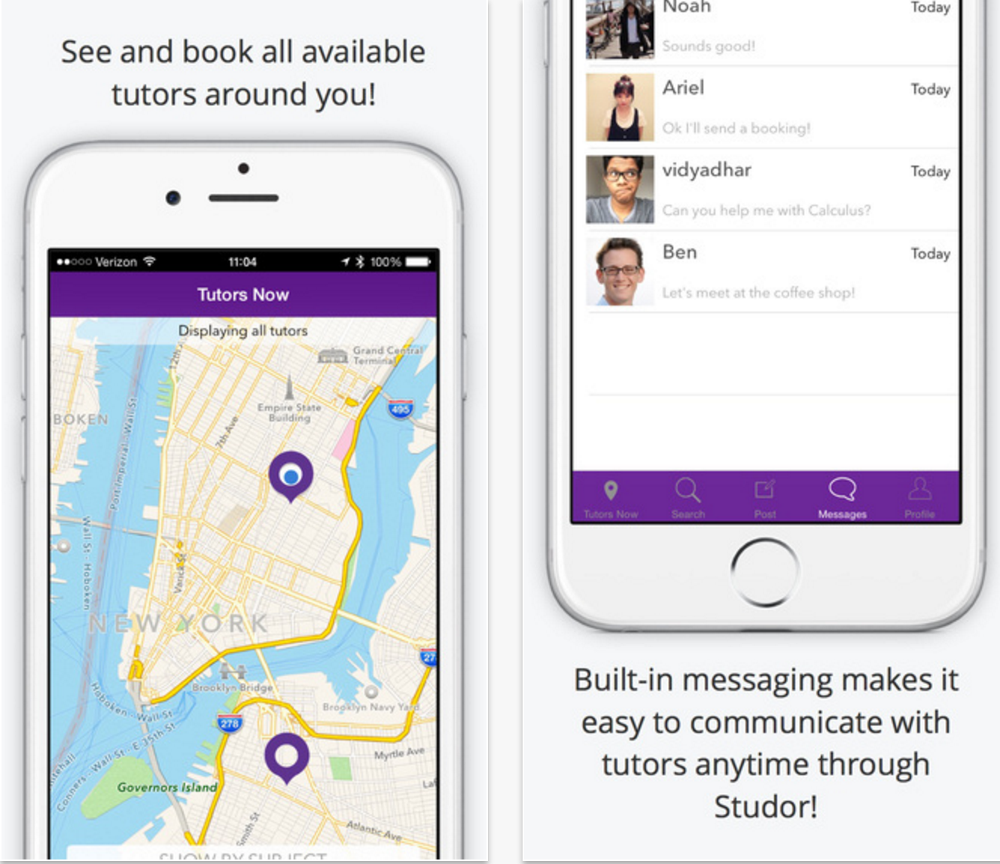
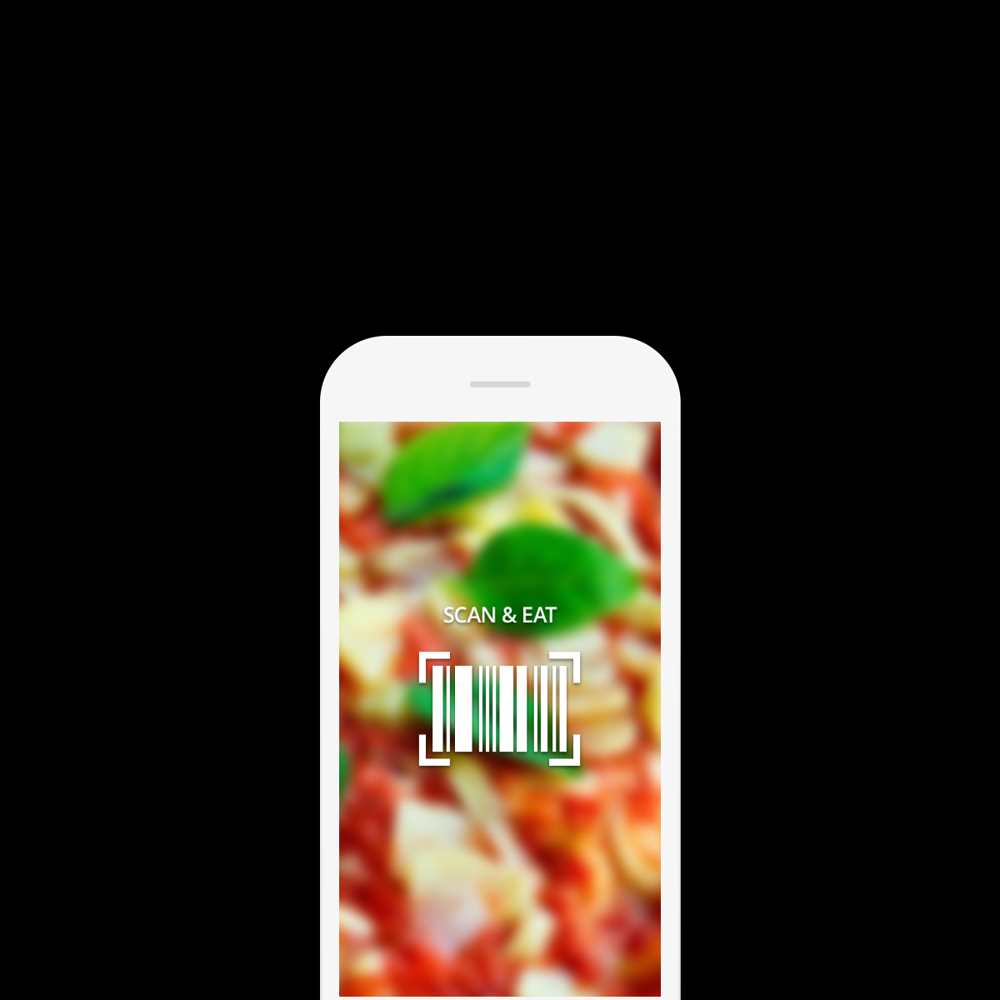

#apps
Here are some of my ios projects.
Studor

Studor is a service which connects students with other student tutors. During the Summer of 2015, I was part of the Studor team, building an ios app which connected students with nearby student tutors. Studor was a part of the NYU Summer Launchpad. The app consisted of a map, displaying all the active tutors based on their locations. This map was initially implemented using MapBox and was then later switched to apple maps. The app also obtained the geo-location data from the phone and plotted the coordinates on a map. We also enabled students to book tutoring sessions for a later period of time. The backend of the application was implemented using Parse cloud code and data storage, the payment system was implemented using the payment gateway service, Stripe.
View on App Store
Visit Website
Scan&Eat

Through this application, we set out to help people with allergies/ food preferences make concious food choices. Scan & eat is an application which scans barcodes of food products and tells you if it is a consumable product, based on the user's food preferences. It is built by using Swift with parse as a backend. It also uses factual's large database to get information of the food products. The app also uses ios' barcode scanning api.
Visit Website
Match Maker
Through this project, we're trying create a community of makers within NYU. My team and I (we call ourselves the Polymafia) got accepted into NYU's Campus Coding Collaborative program to build an application which could connect students with students working on projects. This is a very simple ios application whose backend is implemented using Parse. I'll be posting the UI screens once we release the application to the app store.